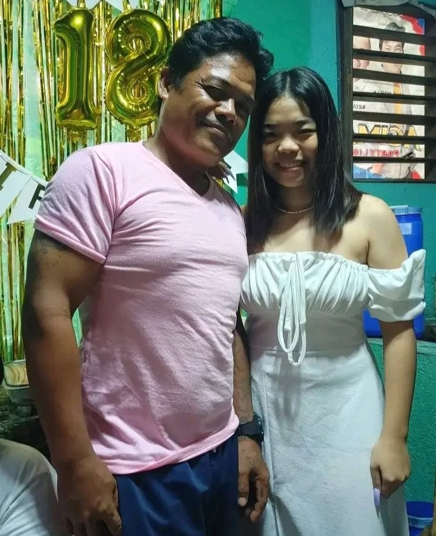
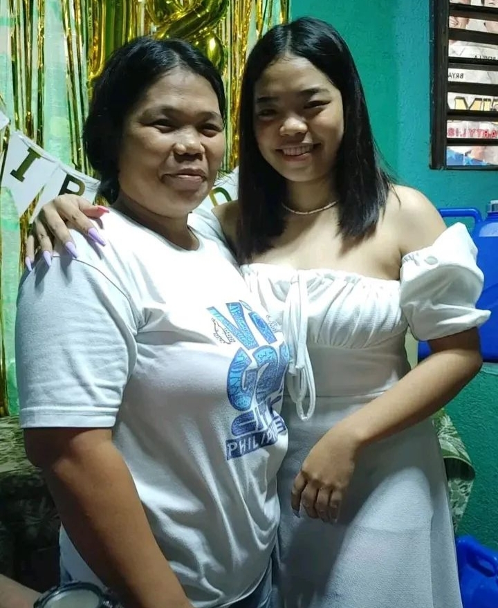
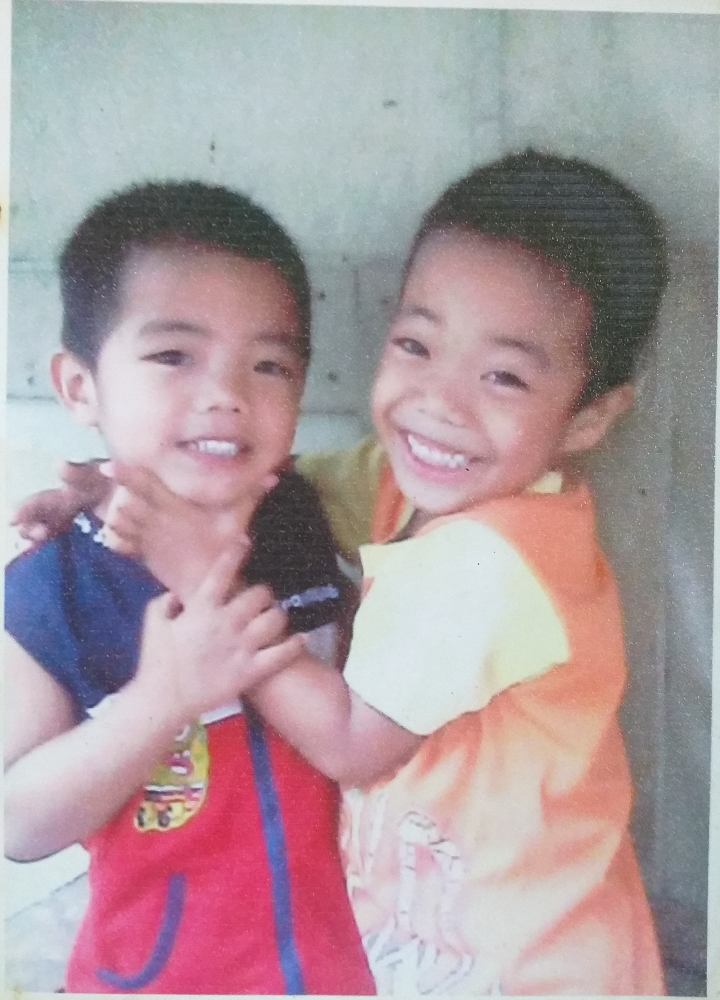

Sangcajo Family


This picture was taken on september 25,2022 in my 18th birthday at 4:40pm. Everything was simple in my debut.
We prepared just right and I only invited my troops. My father's name is Michael D. Sangcajo
and my mother's name is Mary Jane P. Sangcajo. Before my celebration started, papa and mama and
I took a picture. There must have been five of us there, including my two brothers, but they
were shy, maybe they didn't really like to take pictures. Honestly, I realized that every photo
is important for every occasion or even just a simple day that passed with your whole and happy
family captured by the camera because one day the picture will be the only memory of our loved ones.

This photo is from 2012, and my second brother John Michael Sangcajo is about 4 years old, and our
youngest brother is 3 years old. HAHA my siblings are so cute there. It was taken behind the hangar
of our neighbor's house at exactly 3 pm. What happened in that picture was that my brothers were playing,
and I was also like that. My father and mother were hanging out behind our neighbor's house, and my father
and mother thought to take a picture of my brothers because, for them, the picture is really important,
especially since we were young and cute back then. Now that my siblings are older, they are both shy HAHA.

This photo was taken in July this year because my brother was included in the honor,
and he was the only one who had a medal in their section. We were all happy for our youngest, James Michael Sangcajo.
From the time he was in nursery until the 7th grade, he never lost his honor. Before they went to school, they
took pictures with mom before leaving the house.

This picture was taken on Sep. 23, 2023. I put on makeup so I could take a picture for my upcoming birthday at 6 pm.
Because the date of my birthday is Sep. 25, and I am completely 19 years old. I was happy during those days because
my wish was fulfilled.